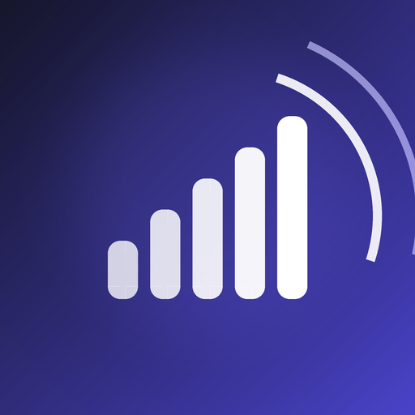
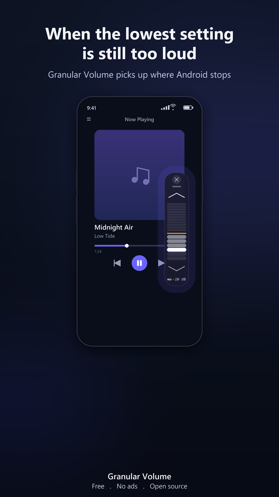
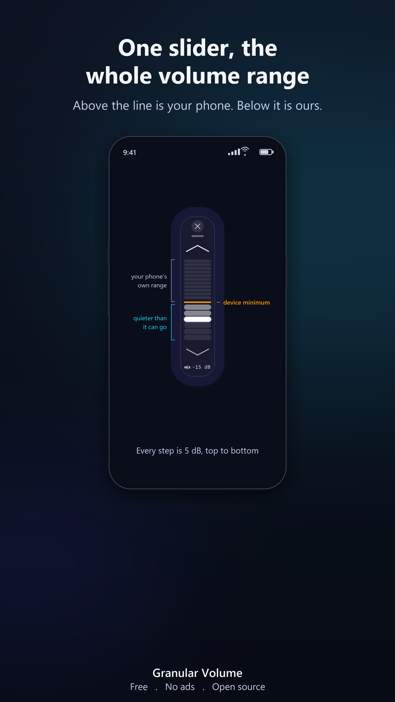
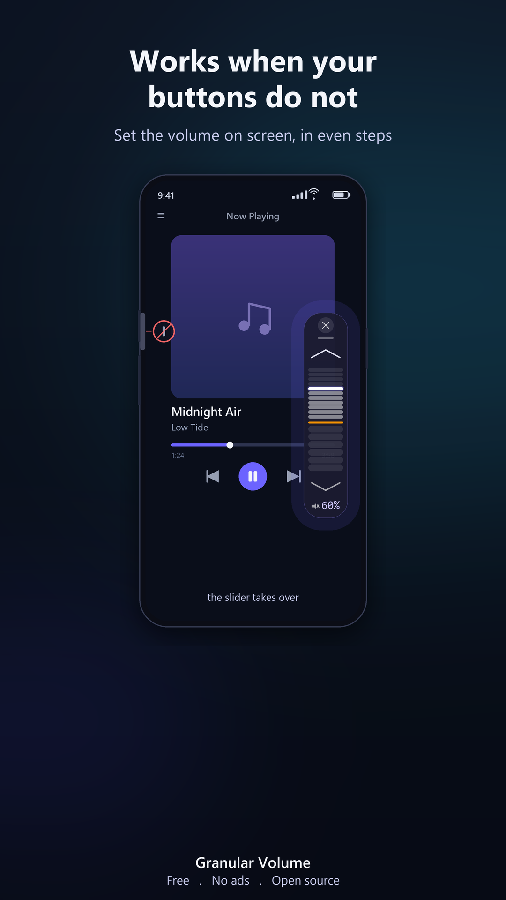
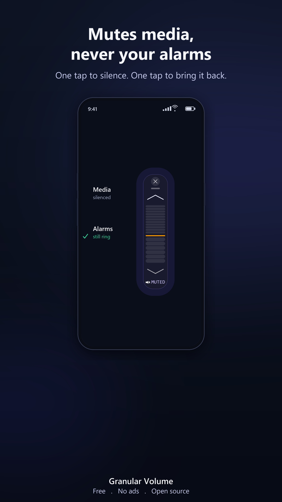
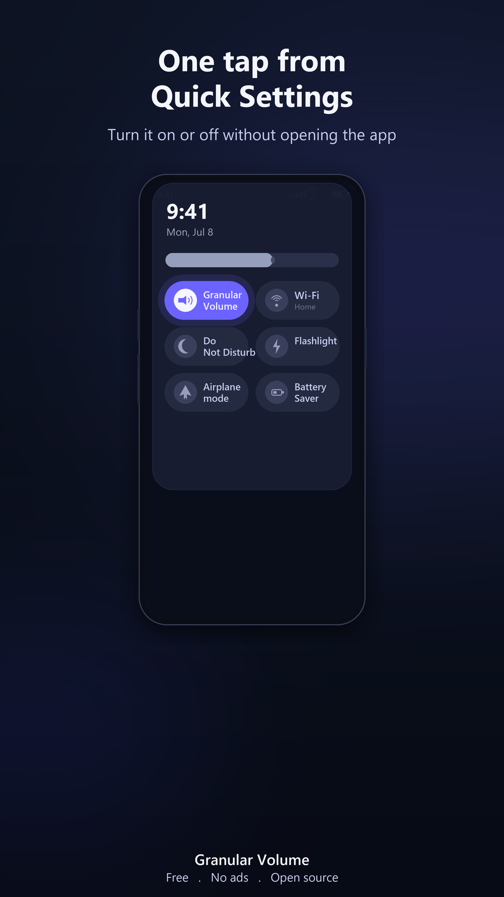

Sometimes the lowest volume setting is still too loud, on a phone or a tablet. Granular Volume adds the volume levels your device leaves out, below the hardware minimum, in a small floating volume control that stays above any app.
The first notch above mute can be too much for a quiet room, a sleeping baby, or a sensitive pair of headphones, on a phone or a tablet. Android will not go lower. Granular Volume does, on both.
Fine attenuation steps beneath the lowest hardware step, for when even the minimum is too much.
Tablets often have an even higher minimum volume than phones. Granular Volume works exactly the same way on both.
It floats over any app. Drag it anywhere, tuck it to an edge, close it with one tap.
No volume button override, no system UI takeover. It just sits on top and stays stable.
Swipe down, tap once. Toggle the control on or off from your notification shade without opening the app.
No ads, no tracking, no account, no network access. Open source under GPL-3.0.
The volume you reach for at night, on a phone or a tablet.
Keep lullabies and white noise barely audible next to a sleeping baby.
For IEMs and bone conduction where even a few percent is too strong.
Tablet speakers and headphones, where the minimum step is often even louder than on a phone.
A podcast or audiobook to fall asleep to, without waking anyone beside you.
A library, a quiet office, meditation, or anywhere that needs calm.
Swipe through.





Most volume apps make things louder or rebuild your whole audio system. Granular Volume does the one thing none of them focus on.